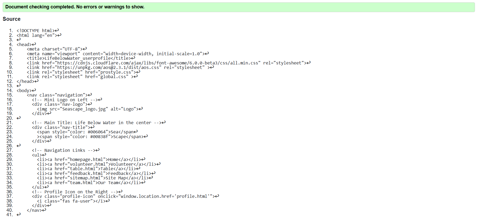
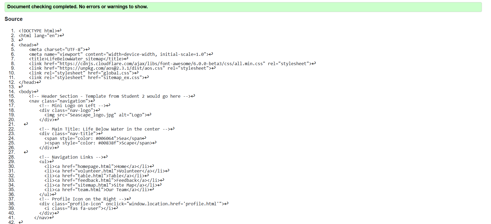
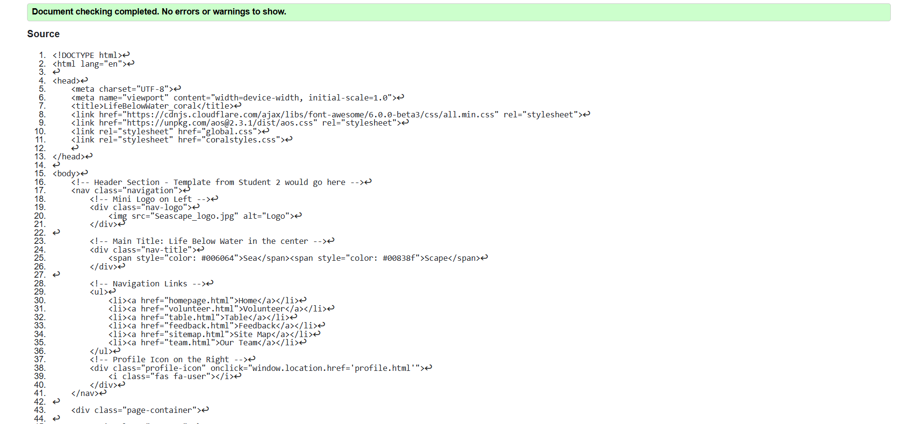

User Profile validation report
The User Profile page successfully passed validation with no errors. Initially, there were some minor issues related to missing alt attributes in images and an unclosed "div" tag, which were corrected. There were a few warnings related to best practices, but they do not impact the functionality or accessibility of the page. Ensuring the page is validated helps maintain web standards, improving accessibility and compatibility across different browsers.

Back to Page Editor page
Sitemap validation report
The Content Page initially had a few validation errors, mainly related to missing "alt" attributes for images and the use of deprecated HTML tags. These issues were resolved by adding descriptive alt text for better accessibility and replacing outdated elements with modern HTML5 alternatives. The page now passes validation successfully, with only minor warnings that do not affect usability. This process highlights the importance of writing clean, standards-compliant code to enhance both user experience and SEO.

Back to Page Editor page
Content Page validation report
The Sitemap Page had a few structural errors, including missing "nav" landmarks and improper nesting of "ul" and "li" elements. These were corrected to ensure proper document structure and semantic accuracy. While a few warnings remained, they were related to best practices rather than actual errors. Ensuring the sitemap page is valid helps search engines index the website more effectively and improves overall navigation for users.
